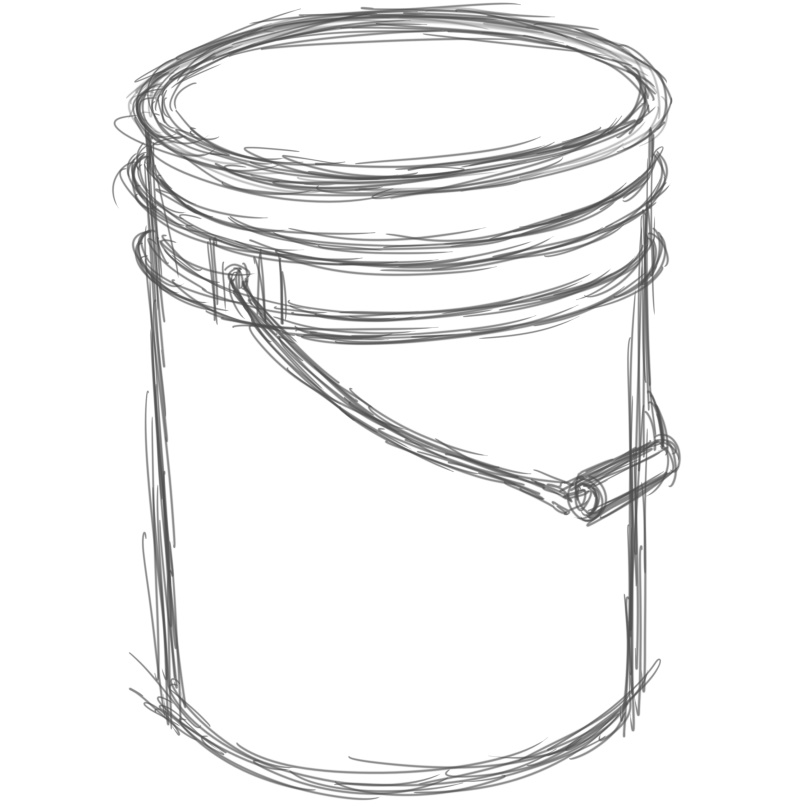
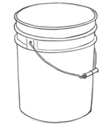

Developing sketch
This stage involves adding details to the sketch and refining the drawing as a whole. Figure 2.20 shows a developed sketch.

Shading
Shading is one of the steps in drawing which involves many drawing techniques. It is a process of drawing by adding tonal values to a drawn image to create an illusion of depth or a three-dimensional effect. Shading is also important in drawing because it enhances form by creating an illusion of light in a drawing. Figure 2.21 shows an ongoing shading stage.